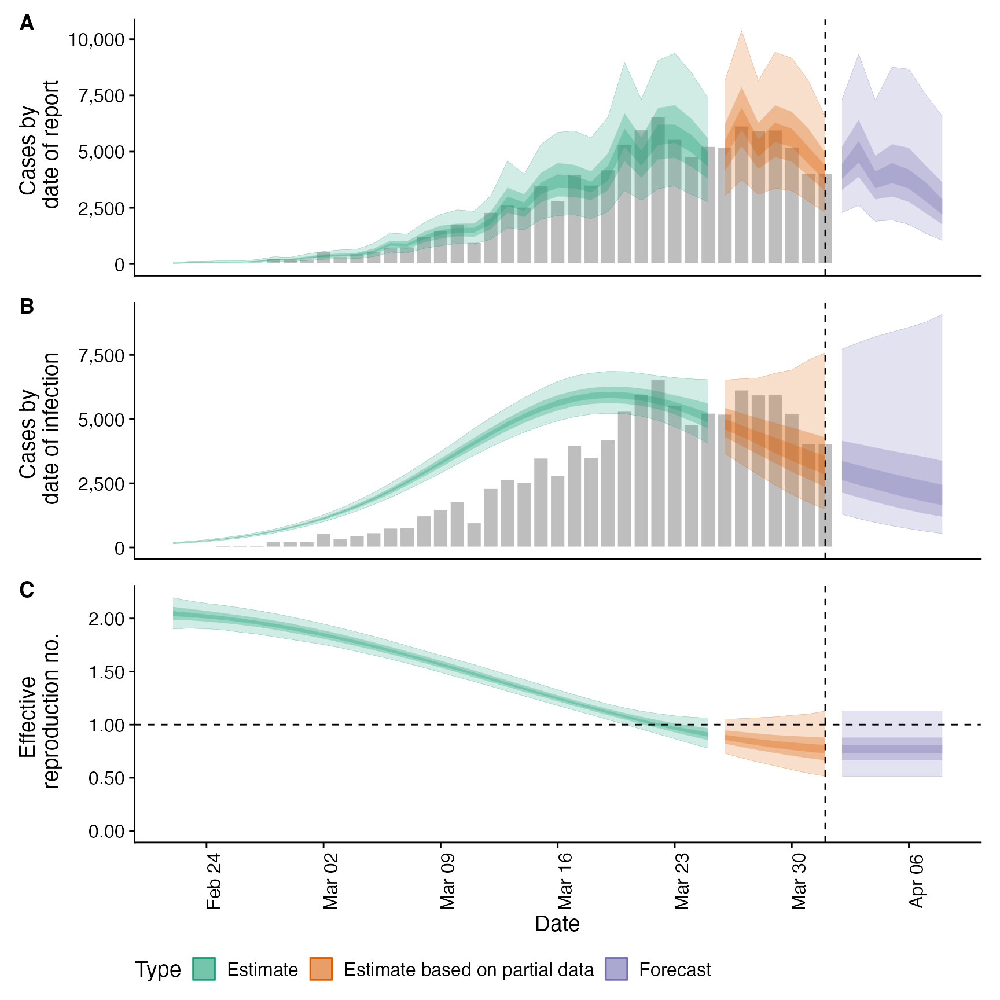

![[Maturing]](figures/lifecycle-maturing.svg) This function wraps the functionality of
This function wraps the functionality of estimate_infections() and forecast_infections() in order
to estimate Rt and cases by date of infection, forecast into these infections into the future. It also contains
additional functionality to convert forecasts to date of report and produce summary output useful for reporting
results and interpreting them. See here for an
example of using epinow to estimate Rt for Covid-19 in a country from the ECDC data source.
epinow(
reported_cases,
generation_time,
delays = delay_opts(),
truncation = trunc_opts(),
rt = rt_opts(),
backcalc = backcalc_opts(),
gp = gp_opts(),
obs = obs_opts(),
stan = stan_opts(),
horizon = 7,
CrIs = c(0.2, 0.5, 0.9),
zero_threshold = 50,
return_output = FALSE,
output = c("samples", "plots", "latest", "fit", "timing"),
plot_args = list(),
target_folder = NULL,
target_date,
forecast_args = NULL,
logs = tempdir(),
id = "epinow",
verbose = interactive()
)Arguments
| reported_cases | A data frame of confirmed cases (confirm) by date (date). confirm must be integer and date must be in date format. |
|---|---|
| generation_time | A list containing the mean, standard deviation of the mean (mean_sd), standard deviation (sd), standard deviation of the standard deviation and the maximum allowed value for the generation time (assuming a gamma distribution). |
| delays | A call to |
| truncation |
|
| rt | A list of options as generated by |
| backcalc | A list of options as generated by |
| gp | A list of options as generated by |
| obs | A list of options as generated by |
| stan | A list of stan options as generated by |
| horizon | Numeric, defaults to 7. Number of days into the future to forecast. |
| CrIs | Numeric vector of credible intervals to calculate. |
| zero_threshold |
|
| return_output | Logical, defaults to FALSE. Should output be returned, this automatically updates to TRUE if no directory for saving is specified. |
| output | A character vector of optional output to return. Supported options are samples ("samples"),
plots ("plots"), the run time ("timing"), copying the dated folder into a latest folder (if |
| plot_args | A list of optional arguments passed to |
| target_folder | Character string specifying where to save results (will create if not present). |
| target_date | Date, defaults to maximum found in the data if not specified. |
| forecast_args | A list of arguments to pass to |
| logs | Character path indicating the target folder in which to store log
information. Defaults to the temporary directory if not specified. Default logging
can be disabled if |
| id | A character string used to assign logging information on error. Used by |
| verbose | Logical, defaults to |
![[Experimental]](figures/lifecycle-experimental.svg)
Value
A list of output from estimate_infections, forecast_infections, report_cases, and report_summary.
See also
estimate_infections simulate_infections forecast_infections regional_epinow
Examples
# \donttest{
# set number of cores to use
options(mc.cores = ifelse(interactive(), 4, 1))
# construct example distributions
generation_time <- get_generation_time(disease = "SARS-CoV-2", source = "ganyani")
incubation_period <- get_incubation_period(disease = "SARS-CoV-2", source = "lauer")
reporting_delay <- list(
mean = convert_to_logmean(2, 1),
mean_sd = 0.1,
sd = convert_to_logsd(2, 1),
sd_sd = 0.1,
max = 10
)
# example case data
reported_cases <- example_confirmed[1:40]
# estimate Rt and nowcast/forecast cases by date of infection
out <- epinow(
reported_cases = reported_cases, generation_time = generation_time,
rt = rt_opts(prior = list(mean = 2, sd = 0.1)),
delays = delay_opts(incubation_period, reporting_delay)
)
#> Logging threshold set at INFO for the EpiNow2 logger
#> Writing EpiNow2 logs to the console and: /var/folders/24/8k48jl6d249_n_qfxwsl6xvm0000gn/T//RtmpcfvR8R/regional-epinow/2020-04-01.log
#> Logging threshold set at INFO for the EpiNow2.epinow logger
#> Writing EpiNow2.epinow logs to the console and: /var/folders/24/8k48jl6d249_n_qfxwsl6xvm0000gn/T//RtmpcfvR8R/epinow/2020-04-01.log
#> WARN [2021-08-25 01:49:47] epinow: There were 19 divergent transitions after warmup. See
#> http://mc-stan.org/misc/warnings.html#divergent-transitions-after-warmup
#> to find out why this is a problem and how to eliminate them. -
#> WARN [2021-08-25 01:49:47] epinow: Examine the pairs() plot to diagnose sampling problems
#> -
# summary of the latest estimates
summary(out)
#> measure estimate
#> 1: New confirmed cases by infection date 3102 (1297 -- 6910)
#> 2: Expected change in daily cases Likely decreasing
#> 3: Effective reproduction no. 0.75 (0.49 -- 1.1)
#> 4: Rate of growth -0.07 (-0.16 -- 0.022)
#> 5: Doubling/halving time (days) -9.9 (31 -- -4.4)
# plot estimates
plot(out)

# summary of R estimates
summary(out, type = "parameters", params = "R")
#> date variable strat type median
#> 1: 2020-02-22 R <NA> estimate 2.0400235
#> 2: 2020-02-23 R <NA> estimate 2.0317500
#> 3: 2020-02-24 R <NA> estimate 2.0197935
#> 4: 2020-02-25 R <NA> estimate 2.0028885
#> 5: 2020-02-26 R <NA> estimate 1.9846100
#> 6: 2020-02-27 R <NA> estimate 1.9644733
#> 7: 2020-02-28 R <NA> estimate 1.9383530
#> 8: 2020-02-29 R <NA> estimate 1.9104295
#> 9: 2020-03-01 R <NA> estimate 1.8791831
#> 10: 2020-03-02 R <NA> estimate 1.8462847
#> 11: 2020-03-03 R <NA> estimate 1.8111220
#> 12: 2020-03-04 R <NA> estimate 1.7738176
#> 13: 2020-03-05 R <NA> estimate 1.7340597
#> 14: 2020-03-06 R <NA> estimate 1.6940317
#> 15: 2020-03-07 R <NA> estimate 1.6533648
#> 16: 2020-03-08 R <NA> estimate 1.6115351
#> 17: 2020-03-09 R <NA> estimate 1.5688942
#> 18: 2020-03-10 R <NA> estimate 1.5247661
#> 19: 2020-03-11 R <NA> estimate 1.4806071
#> 20: 2020-03-12 R <NA> estimate 1.4340833
#> 21: 2020-03-13 R <NA> estimate 1.3885703
#> 22: 2020-03-14 R <NA> estimate 1.3423512
#> 23: 2020-03-15 R <NA> estimate 1.2957401
#> 24: 2020-03-16 R <NA> estimate 1.2493432
#> 25: 2020-03-17 R <NA> estimate 1.2050926
#> 26: 2020-03-18 R <NA> estimate 1.1612819
#> 27: 2020-03-19 R <NA> estimate 1.1189929
#> 28: 2020-03-20 R <NA> estimate 1.0778897
#> 29: 2020-03-21 R <NA> estimate 1.0386724
#> 30: 2020-03-22 R <NA> estimate 1.0009712
#> 31: 2020-03-23 R <NA> estimate 0.9661975
#> 32: 2020-03-24 R <NA> estimate 0.9337842
#> 33: 2020-03-25 R <NA> estimate 0.9042709
#> 34: 2020-03-26 R <NA> estimate based on partial data 0.8778950
#> 35: 2020-03-27 R <NA> estimate based on partial data 0.8524504
#> 36: 2020-03-28 R <NA> estimate based on partial data 0.8295114
#> 37: 2020-03-29 R <NA> estimate based on partial data 0.8064282
#> 38: 2020-03-30 R <NA> estimate based on partial data 0.7872069
#> 39: 2020-03-31 R <NA> estimate based on partial data 0.7707662
#> 40: 2020-04-01 R <NA> estimate based on partial data 0.7544764
#> 41: 2020-04-02 R <NA> forecast 0.7544764
#> 42: 2020-04-03 R <NA> forecast 0.7544764
#> 43: 2020-04-04 R <NA> forecast 0.7544764
#> 44: 2020-04-05 R <NA> forecast 0.7544764
#> 45: 2020-04-06 R <NA> forecast 0.7544764
#> 46: 2020-04-07 R <NA> forecast 0.7544764
#> 47: 2020-04-08 R <NA> forecast 0.7544764
#> date variable strat type median
#> mean sd lower_90 lower_50 lower_20 upper_20 upper_50
#> 1: 2.0431307 0.09247615 1.8970949 1.9792808 2.0170224 2.0644295 2.1048274
#> 2: 2.0336035 0.08236873 1.9050539 1.9751596 2.0116093 2.0524191 2.0885483
#> 3: 2.0212853 0.07770371 1.8989413 1.9686632 2.0012495 2.0378172 2.0717823
#> 4: 2.0058769 0.07624102 1.8832594 1.9544088 1.9855922 2.0219334 2.0544507
#> 5: 1.9872152 0.07578078 1.8667615 1.9367351 1.9676469 2.0052123 2.0335810
#> 6: 1.9652765 0.07497266 1.8439721 1.9159453 1.9450567 1.9818530 2.0124239
#> 7: 1.9401616 0.07331726 1.8206510 1.8922866 1.9205888 1.9558345 1.9847983
#> 8: 1.9120680 0.07084776 1.7976209 1.8661829 1.8938738 1.9269076 1.9569083
#> 9: 1.8812581 0.06782536 1.7728623 1.8376516 1.8620475 1.8960761 1.9245138
#> 10: 1.8480260 0.06454449 1.7444996 1.8054464 1.8285491 1.8620203 1.8891473
#> 11: 1.8126713 0.06125250 1.7154533 1.7720083 1.7950577 1.8257348 1.8512735
#> 12: 1.7754783 0.05815268 1.6830824 1.7379158 1.7600432 1.7868851 1.8125401
#> 13: 1.7367025 0.05543777 1.6496317 1.7003583 1.7227618 1.7477938 1.7721722
#> 14: 1.6965633 0.05330061 1.6107763 1.6616189 1.6822592 1.7086859 1.7322341
#> 15: 1.6552417 0.05189098 1.5725029 1.6203870 1.6412752 1.6666398 1.6894070
#> 16: 1.6128831 0.05123351 1.5305681 1.5782804 1.5994401 1.6247808 1.6461951
#> 17: 1.5696066 0.05117035 1.4861955 1.5350197 1.5574543 1.5809243 1.6023645
#> 18: 1.5255182 0.05139529 1.4433306 1.4917797 1.5130189 1.5368457 1.5578517
#> 19: 1.4807288 0.05157695 1.3973684 1.4468043 1.4679544 1.4914387 1.5120035
#> 20: 1.4353710 0.05149308 1.3526875 1.4023935 1.4226948 1.4458921 1.4663832
#> 21: 1.3896115 0.05109225 1.3082142 1.3559406 1.3763709 1.3998808 1.4208003
#> 22: 1.3436568 0.05045745 1.2628479 1.3094009 1.3306712 1.3539168 1.3744914
#> 23: 1.2977514 0.04971503 1.2190261 1.2646907 1.2843627 1.3068625 1.3284003
#> 24: 1.2521704 0.04896876 1.1757242 1.2200902 1.2380808 1.2618185 1.2826368
#> 25: 1.2072108 0.04831812 1.1343802 1.1757771 1.1934108 1.2167218 1.2360024
#> 26: 1.1631816 0.04795435 1.0910703 1.1324155 1.1506548 1.1724229 1.1903811
#> 27: 1.1203947 0.04826018 1.0458026 1.0896869 1.1083022 1.1301330 1.1478405
#> 28: 1.0791552 0.04980966 1.0017969 1.0482312 1.0659956 1.0895968 1.1082403
#> 29: 1.0397499 0.05320488 0.9557678 1.0056320 1.0269493 1.0507130 1.0718569
#> 30: 1.0024366 0.05882801 0.9059877 0.9645664 0.9872198 1.0151189 1.0389320
#> 31: 0.9674339 0.06671136 0.8558535 0.9236115 0.9495405 0.9824761 1.0099048
#> 32: 0.9349146 0.07661372 0.8086640 0.8844013 0.9150073 0.9529859 0.9846860
#> 33: 0.9050019 0.08818294 0.7604811 0.8468416 0.8824836 0.9256346 0.9623306
#> 34: 0.8777699 0.10107523 0.7110990 0.8106475 0.8521390 0.9021626 0.9431304
#> 35: 0.8532470 0.11500742 0.6645234 0.7766434 0.8239244 0.8796309 0.9270434
#> 36: 0.8314196 0.12976777 0.6204354 0.7474803 0.7976432 0.8611757 0.9115458
#> 37: 0.8122373 0.14520469 0.5824028 0.7190311 0.7717733 0.8430448 0.9032621
#> 38: 0.7956172 0.16120065 0.5486171 0.6943416 0.7480549 0.8270830 0.8928107
#> 39: 0.7814477 0.17763846 0.5160527 0.6699588 0.7294695 0.8122628 0.8843682
#> 40: 0.7695919 0.19437165 0.4867514 0.6469803 0.7116256 0.7991536 0.8781084
#> 41: 0.7695919 0.19437165 0.4867514 0.6469803 0.7116256 0.7991536 0.8781084
#> 42: 0.7695919 0.19437165 0.4867514 0.6469803 0.7116256 0.7991536 0.8781084
#> 43: 0.7695919 0.19437165 0.4867514 0.6469803 0.7116256 0.7991536 0.8781084
#> 44: 0.7695919 0.19437165 0.4867514 0.6469803 0.7116256 0.7991536 0.8781084
#> 45: 0.7695919 0.19437165 0.4867514 0.6469803 0.7116256 0.7991536 0.8781084
#> 46: 0.7695919 0.19437165 0.4867514 0.6469803 0.7116256 0.7991536 0.8781084
#> 47: 0.7695919 0.19437165 0.4867514 0.6469803 0.7116256 0.7991536 0.8781084
#> mean sd lower_90 lower_50 lower_20 upper_20 upper_50
#> upper_90
#> 1: 2.200408
#> 2: 2.171737
#> 3: 2.149988
#> 4: 2.130832
#> 5: 2.111638
#> 6: 2.089965
#> 7: 2.065433
#> 8: 2.032571
#> 9: 1.995337
#> 10: 1.958400
#> 11: 1.917753
#> 12: 1.871719
#> 13: 1.829821
#> 14: 1.784894
#> 15: 1.743411
#> 16: 1.700176
#> 17: 1.652454
#> 18: 1.607861
#> 19: 1.563655
#> 20: 1.520413
#> 21: 1.477276
#> 22: 1.430788
#> 23: 1.385297
#> 24: 1.337182
#> 25: 1.290787
#> 26: 1.245013
#> 27: 1.201230
#> 28: 1.163773
#> 29: 1.131899
#> 30: 1.101821
#> 31: 1.077396
#> 32: 1.060440
#> 33: 1.053679
#> 34: 1.046287
#> 35: 1.043351
#> 36: 1.045082
#> 37: 1.050516
#> 38: 1.060150
#> 39: 1.068934
#> 40: 1.084516
#> 41: 1.084516
#> 42: 1.084516
#> 43: 1.084516
#> 44: 1.084516
#> 45: 1.084516
#> 46: 1.084516
#> 47: 1.084516
#> upper_90
# }